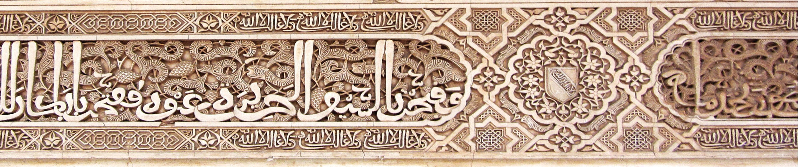

Von der Verfassung von Medina (622), die Juden und Muslimen gleichermaßen Religionsfreiheit zusicherte, bis zur Aufnahme der aus Spanien vertriebenen Juden durch Sultan Bayezid II. (1492): Koexistenz war in der sunnitischen Rechtstradition über 1300 Jahre der Normalfall. Dieses Nachschlagewerk ist sortiert nach Quellenart, mit offenem Blick auf das, was gesichert ist und was Historiker bis heute diskutieren.
Jeder Beleg ist einer von drei Kategorien zugeordnet. Das macht sichtbar, wie sicher eine Aussage historisch verankert ist.
Wo die Forschung an der Datierung oder Zuschreibung einer Quelle zweifelt, steht das in einer „Randglosse" direkt neben dem Beleg. Kategorie B umfasst dabei bewusst mehrere Dinge zusammen: den Qur'an-Text, den klassischen Hadith-Text und ihre durchgehende Auslegung durch die traditionelle sunnitische Gelehrsamkeit bis heute. Der Schutz von Dhimmis (Andersgläubige) ist dabei kein Sonderfall.
Drei Aussagen, die im Zusammenhang mit dem Islam häufig kursieren — geprüft an denselben Quellen, die auch die Zeitleiste unten trägt.
„Muslime wollen insgeheim andere Religionen vernichten, sie sind nur friedlich, solange sie in der Unterzahl sind."
Ab der Verfassung von Medina (622) waren Muslime in der hier behandelten Geschichte fast durchgehend die politisch-militärisch dominante Kraft, nicht die Minderheit. Unter Umayyaden, Abbasiden, Mamluken und Osmanen jeweils auf dem Höhepunkt ihrer Macht. Genau in diesen Phasen blieb der Rechtsschutz für Juden und Christen in Kraft: Jahrhunderte christlicher Kirchenbau-Kontinuität, eine christliche Ärztefamilie am Kalifenhof über Generationen, jüdische Wesire in Granada, die Kairoer Geniza, sind doch alles Zeugnisse die aufzeigen, wie Muslime mit Andersgläubigen in Frieden und Produktivität lebten.
Das historische Beispiel des osmanischen Sultans Bayezid II. dient unter anderem als Gegenbeweis: 1492 gewährte er den aus Spanien vertriebenen sephardischen Juden Asyl im Osmanischen Reich. Würde die genannte These zutreffen, müssten wir mit Verfolgungsmaßnahmen rechnen. Die Realität zeigt jedoch das Gegenteil.
Kategorie A/C · Details in den Epochen-Abschnitten untenDas Yaqeen Institute weist darauf hin, dass Nicht-Muslime nach den ersten Eroberungen über mehr als zwei Jahrhunderte hinweg die Bevölkerungsmehrheit im Kalifat bildeten; die bloße Existenz großer, aufblühender jüdischer und christlicher Gemeinden im klassischen islamischen Raum sei der direkteste historische Gegenbeweis gegen eine Politik der Zwangskonversion. SeekersGuidance (Shaykh Irshaad Sedick) verweist darauf, dass jüdische Gemeinden unter muslimischer Herrschaft in Spanien und im Osmanischen Reich aufblühten, nachdem sie andernorts, v. a. in Europa, Verfolgung erlitten hatten.
yaqeeninstitute.org, „Did Islam Spread by the Sword?"; seekersguidance.org, „Is It Hypocritical...?"„Der Koran erlaubt Muslimen, andere zu täuschen, um im richtigen Moment zuzuschlagen."
Der oft zitierte Begriff „Taqiyya" ist als systematisierte Lehre in erster Linie ein schiitisches Rechtskonzept, entwickelt aus der Verfolgungserfahrung einer religiösen Minderheit — auf sunnitische Lehre angewendet, ist der Begriff bereits unpräzise gewählt.
Was sunnitische Quellen tatsächlich enthalten: Quran 16:106 erlaubt die verbale Verleugnung des Glaubens ausschließlich unter akuter Lebensgefahr (Anlass war die Folterung des Gefährten Ammar ibn Yasir) — eine eng begrenzte Notlagen-Ausnahme, keine Beziehungsstrategie gegenüber Andersgläubigen. Das Hadith „Krieg ist Täuschung" (Sahih al-Bukhari) bezieht sich auf taktische Kriegslist im aktiven bewaffneten Konflikt, ein Prinzip, das sich in der Kriegsethik praktisch jeder Zivilisation findet, nicht auf den Umgang mit Nachbarn im Frieden.
Es gibt keine mehrheitlich anerkannte sunnitische Rechtsgrundlage für dauerhafte, generelle Täuschung von Schutzbefohlenen. Die jahrhundertelange, generationenübergreifende Zusammenarbeit mit nicht-muslimischen Beamten, Ärzten und Gelehrten (siehe Epochen unten) wäre bei einer solchen Strategie kaum erklärbar.
Quran 16:106; Sahih al-Bukhari (Kriegslist-Hadith)„Der Islam lehrt seinen Anhängern Antisemitismus."
Über mehr als ein Jahrtausend bekleideten Juden unter sunnitischer Herrschaft hohe Vertrauensämter: Samuel und Joseph ibn Naghrilla als Wesire in Granada (bis 1066), Leibärzte an mehreren Höfen, Verwaltungsbeamte in der Mamlukenzeit. Maimonides, der bedeutendste jüdische Gelehrte des Mittelalters, floh nicht vor sunnitischer Herrschaft, sondern vor den Almohaden — einer radikalen Reformbewegung, deren Gründer Ibn Tumart sich selbst zum Mahdi erklärte und die auch gegen malikitisch-sunnitische Gelehrte vorging, die sich seiner Autorität nicht unterordneten. Die Kairoer Geniza dokumentiert jahrhundertelangen jüdischen Alltag unter Mamlukenherrschaft ohne Bruch.
Kategorie A · Details in den Epochen-Abschnitten untenYaqeen Institute: "..die Dhimma-Praxis stehe im Vergleich zur Behandlung von Nicht-Christen im vormodernen Europa gut da. Einzelne Missbrauchsfälle, Yaqeen nennt hier den fatimidischen Kalifen, (einen nicht-sunnitischen Kalifen al-Hakim), gelten dort als seltene Randerscheinungen, definitv nicht als Norm.
yaqeeninstitute.org, „Did Islam Spread by the Sword?"
Nach der Auswanderung 622 lebte in Medina eine religiös gemischte Stadt: die muslimische Gemeinschaft neben mehreren jüdischen Stämmen und weiteren Gruppen. Die frühesten erhaltenen Ordnungstexte des Islam stammen aus genau dieser Konstellation. Wir analyisieren im Folgenden zuerst was im Quran vorzufinden ist, im Bezug darauf, wie Muslime mit Andersgläubige umzugehen haben.
„Allah verbietet euch nicht, gegenüber denen, die euch nicht wegen der Religion bekämpfen und nicht aus euren Häusern vertreiben, rechtschaffen und gerecht zu handeln. Allah liebt die Gerechten." Ibn Kathir kommentiert: Gemeint seien jene, die an einer Vertreibung keinen Anteil hatten; Güte (birr) und Fairness (qist) ihnen gegenüber seien ausdrücklich erlaubt — als Beispiele nennt er Frauen und Schutzbedürftige. Der Folgevers 60:9 grenzt ab: Untersagt ist allein das Bündnis mit denen, die tatsächlich gekämpft, vertrieben oder bei der Vertreibung geholfen haben.
Dt. Wiedergabe nach dem arab. Original (vgl. Sahih International); Tafsir Ibn Kathir zu 60:8–9„… und lasst nicht den Hass gegen ein Volk euch davon abhalten, gerecht zu sein. Seid gerecht — das ist der Gottesfurcht (taqwa) näher." Ibn Kathir kommentiert unmissverständlich: Man dürfe sich vom Hass auf bestimmte Leute nicht dazu hinreißen lassen, ihnen gegenüber die Gerechtigkeit zu unterlassen — gerecht sei man gegenüber jedem, ob Freund oder Feind.
Dt. Wiedergabe nach dem arab. Original (vgl. Sahih International); Tafsir Ibn Kathir zu 5:8„Streitet mit den Leuten der Schrift nur auf die beste Weise — außer mit denen von ihnen, die Unrecht begehen … Unser Gott und euer Gott ist einer, und Ihm sind wir ergeben." Ibn Kathir kommentiert: Wer sich bei ihnen über Religion erkundigen wolle, solle das im bestmöglichen Ton tun, weil das wirksamer sei; er verweist dabei auf Gottes Anweisung an Musa und Harun, selbst gegenüber Pharao „milde zu sprechen" (Sure 20:44). Die Ausnahme „die Unrecht begehen" deutet er auf jene, die sich der klaren Wahrheit trotzig und hochmütig verschließen — nicht auf eine ganze Gruppe.
Dt. Wiedergabe nach dem arab. Original (vgl. Sahih International); Tafsir Ibn Kathir zu 29:46Regelt gemeinsame Verteidigung und Rechtsprechung zwischen Muslimen und jüdischen Stämmen und hält fest: den Juden ihre Religion, den Muslimen ihre Religion. Gilt als eines der am besten gesicherten Dokumente der frühesten islamischen Zeit.
Ibn Ishaq / Ibn Hisham, SiraSchutzzusage im Austausch gegen Jizya; garantierte Religionsausübung, eigene Kirchen und Rechtsprechung für die christliche Delegation aus dem Jemen.
Ibn Sa'd; al-Baladhuri, Futuh al-BuldanTraditionell auf 626 datierter Schutzbrief an das Sinai-Kloster. Bis heute dort als Reliquie verwahrt bzw. in Abschriften bezeugt.
Kopien: Katharinenkloster Sinai, SimonopetraNach einem öffentlich eskalierten Konflikt und anschließenden bewaffneten Auseinandersetzungen mit Todesopfern wurden die Banū Qaynuqāʿ wegen Bruchs des Bündnisvertrags von Medina belagert und anschließend nach Syrien verbannt (keine Hinrichtungen).
Ibn Ishaq; vgl. F. Donner, F. E. PetersNach der Aufdeckung eines Attentatsplans gegen den Propheten Mohammed ﷺ wurden die Banū Naḍīr wegen Vertragsbruchs belagert und anschließend nach Khaybar vertrieben.
Ibn Ishaq; Sahih MuslimDie Banū Qurayẓa waren Teil des Verteidigungsbündnisses von Medina und hatten sich verpflichtet, die Stadt im Kriegsfall nicht zu verraten. Während der Grabenschlacht wurde Medina von einer zahlenmäßig weit überlegenen Koalition belagert. Nach klassischer islamischer Überlieferung lösten sich die Banū Qurayẓa in dieser entscheidenden Phase von ihrem Bündnis, nahmen Kontakt mit den Belagerern auf und beabsichtigten, ihnen den Zugang zur Stadt zu ermöglichen. Dadurch drohte den Muslimen ein gleichzeitiger Angriff von außen und von innen – eine Situation, die nach traditioneller islamischer Auffassung das Ende der gesamten Gemeinde hätte bedeuten können. Nachdem die Belagerung gescheitert war, ergaben sich die Banū Qurayẓa. Der Prophet ﷺ überließ ihnen die Wahl eines Schiedsrichters; sie akzeptierten Saʿd ibn Muʿādh, einen früheren Verbündeten ihres Stammes. Saʿd sprach das Urteil über die als kämpfende Männer geltenden Stammesangehörigen, diese wurden hingerichtet. Frauen und Kinder wurden als Kriegsgefangene behandelt.
Ibn Ishaq; Sahih al-BukhariMit der Expansion nach Syrien, Palästina, Ägypten, Irak und Persien wurden Millionen Christen, Juden und Zoroastrier zu Untertanen des Kalifats — die Dhimma-Praxis entsteht in dieser Zeit als gelebte Verwaltungsrealität.
Persönliche Schutzzusage Umars an Patriarch Sophronius bei der kampflosen Übergabe Jerusalems — Leben, Besitz und Kirchen bleiben unangetastet.
al-Tabari (nach Sayf ibn Umar)Der ausführliche Regelkatalog für Dhimmis, der später Umar I. zugeschrieben wurde: Kleidungsvorschriften, Bauverbote, Verhaltensregeln.
früheste Zitate ab ca. 9./10. Jh.Die Hauptstadt verlagert sich nach Damaskus, mitten in eine überwiegend christliche Bevölkerung. Rechtstexte und gelebte Praxis klaffen in dieser Zeit sichtbar auseinander.
Archäologisch belegter Weiterbau und Neubau christlicher Kirchen in Jordanien und Palästina — trotz rechtlicher Bauverbote in den Dhimma-Texten.
Ausgrabungsbefunde Jordanien/PalästinaVerwaltungskorrespondenz zwischen arabischen Gouverneuren und koptisch-christlichen Dorfvorstehern — Alltagsverwaltung aus erster Hand.
Papyrussammlungen, u. a. British LibraryBagdad wird zum intellektuellen Zentrum — und zu einem Ort, an dem christliche, jüdische und sabische Gelehrte das „Haus der Weisheit" mittragen.
Zehntausende Dokumente aus der Ben-Esra-Synagoge Kairo — Verträge, Briefe, Gerichtsakten. Zentrale Quelle für jüdischen Alltag unter Fatimiden, Ayyubiden und Mamluken (10.–13. Jh.).
Grundlage: S. D. Goitein, „A Mediterranean Society"Übersetzungsbewegung, an der u. a. der christliche Gelehrte Hunayn ibn Ishaq zentral beteiligt war.
Chroniken der frühen AbbasidenzeitDie oft zitierte „Convivencia" beschreibt reale Phasen kulturellen Austauschs — sie war aber kein durchgängiges Idyll und schwankte stark je nach Dynastie.
Bedeutendster jüdischer Gelehrter des Mittelalters, geboren in Córdoba unter den Almohaden zunächst geduldet, floh später vor deren härterer Politik nach Ägypten.
Werke Maimonides'; zeitgenöss. ChronistikArabische, hebräische und lateinische Gelehrte übersetzen gemeinsam wissenschaftliche Werke, dokumentiert durch erhaltene Manuskripttraditionen.
Manuskriptbestände Toledo/EscorialMit dem Millet-System entsteht eine rechtlich verankerte religiöse Selbstverwaltung für christlich-orthodoxe, armenische und jüdische Gemeinden.
Jede anerkannte Religionsgemeinschaft verwaltet Personenstands- und Zivilrecht durch eigene geistliche Oberhäupter, unter osmanischer Oberhoheit.
osmanische Kanunname/VerwaltungsaktenNach der Vertreibung aus Spanien nimmt Sultan Bayezid II. sephardische Juden im Osmanischen Reich auf.
osmanische und jüdische ChronistikSultan Selim I. bestätigt nach der Eroberung Ägyptens die Schutzrechte des Sinai-Klosters erneut per Urkunde.
Archiv Katharinenkloster SinaiDhimmis sind nichtmuslimische Bürger unter islamischer Herrschaft, die vertraglichen Schutz genießen. Sie erhalten Glaubensfreiheit und Eigentumsschutz im Austausch für die Zahlung einer Schutzsteuer (Dschizya) und sind vom Militärdienst befreit.
Einordbar als Schutz- und Freistellungssteuer (u. a. vom Militärdienst), zugleich Instrument sozialer Hierarchisierung — beide Lesarten sind in der Forschung belegt.
Forschungsstand (u. a. Richard Bulliet) zeigt langsame, regional sehr unterschiedliche Konversionsverläufe über Jahrhunderte statt abrupter Zwangskonversion.
Wie streng Kleidungsvorschriften und Bauverbote durchgesetzt wurden, wie hoch die Jizya tatsächlich ausfiel und wie sicher Leben und Eigentum von Dhimmis waren, hing stark von Herrscher, Dynastie und Region ab — von weitgehender Toleranz unter frühen Umayyaden in Córdoba oder den Osmanen bis zu Härtephasen wie unter den Almohaden oder im Mamluken-Ägypten des 14. Jahrhunderts.